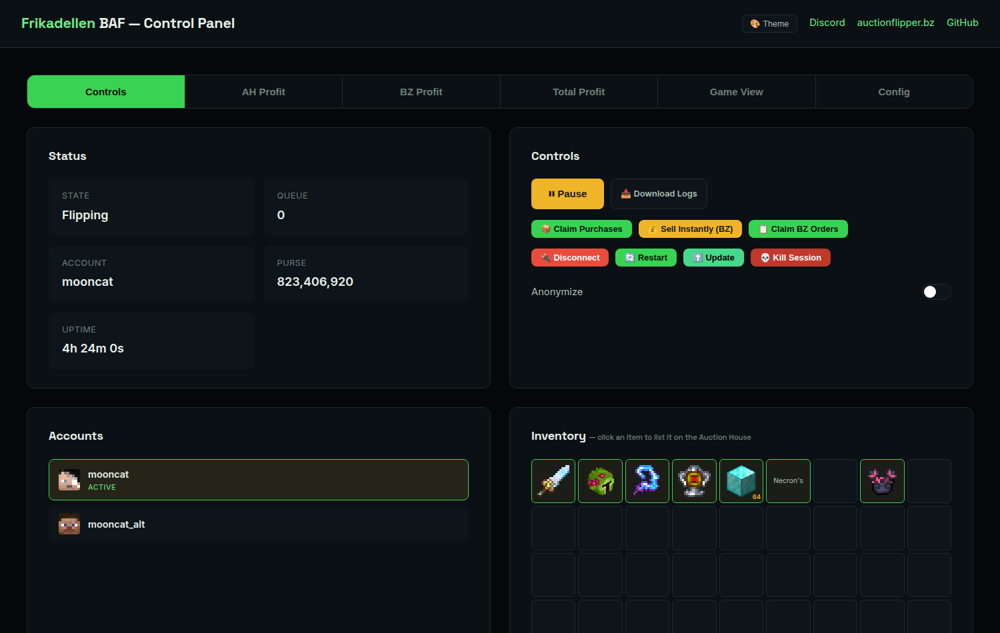
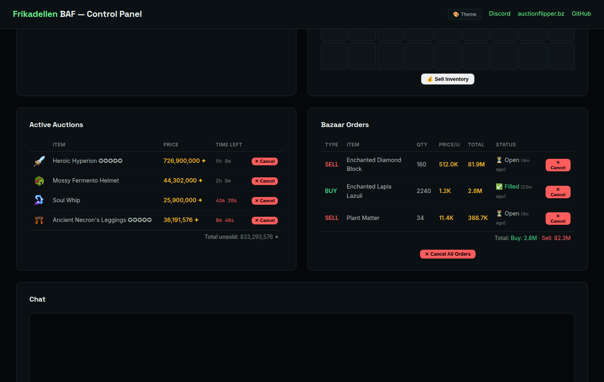
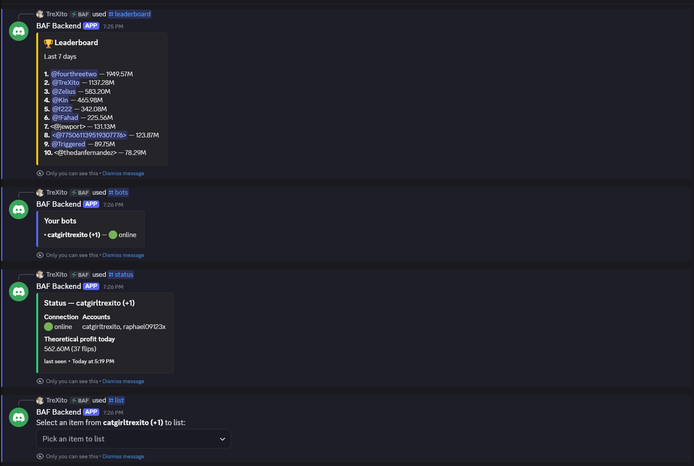
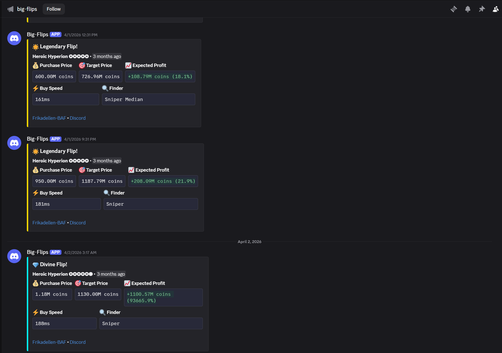

It boots itself.
Joins SkyBlock, clears old orders, claims what already sold, and locks onto Coflnet's live flip feed.
Frikadellen BAF snipes underpriced auctions and runs your bazaar orders around the clock, completely hands-free. You sleep; it stacks coins.
scrollJoins SkyBlock, clears old orders, claims what already sold, and locks onto Coflnet's live flip feed.
The instant a profitable BIN appears, BAF buys it automatically, before a human could even read the price.
Every buy is re-listed at the target price and the sold ones are claimed the second they go.
Buy and sell orders placed, filled, collected and re-priced. A second stream of coins, fully automatic.
Every flip logged with profit to the web panel and Discord. Then it does it all again, 24/7.
No babysitting, no clicking. Point it at your account and it flips the Auction House and the Bazaar on its own.
Coflnet's feed points BAF at underpriced BINs; it buys them automatically and relists at profit.
Places, fills, collects and re-prices buy & sell orders, a second stream of coins, hands-free.
Multi-account rotation, auto-reconnect and a watchdog keep it flipping 24/7 while you're gone.
No subscription, no catch. AGPLv3, built in Rust. You only need a Coflnet account to run it.
the auction house & bazaar, worked 24/7, so you don't have to
Scroll through the biggest flips BAF has landed. Real numbers, straight from the public feed.
A real session: sniping, relisting and collecting, hands-free.
Video not loading? Watch on YouTube ↗
A real-time web panel and full Discord control. Check profit, pause, or list an item from your phone.




One Linux VPS, three commands. The loader keeps itself updated.
$ wget https://github.com/TreXito/frikadellen-baf-121/releases/latest/download/FrikadellenBAF-loader-linux-x86_64
$ chmod +x FrikadellenBAF-loader-linux-x86_64
$ ./FrikadellenBAF-loader-linux-x86_64
The loader downloads and runs the latest version on every start. Wrap it in screen to keep it alive 24/7.
$ wget https://github.com/TreXito/frikadellen-baf-121/releases/latest/download/frikadellen_baf-linux-x86_64
$ chmod +x frikadellen_baf-linux-x86_64
$ ./frikadellen_baf-linux-x86_64
Windows & macOS builds are on the releases page.
A Hypixel SkyBlock macro that flips the Auction House and Bazaar for you. It snipes underpriced BIN auctions, relists them at target, runs your bazaar orders, and tracks profit. Controllable from a web panel or straight from Discord.
Yes. Free and open source under the AGPLv3 license. You only need a Coflnet account for the flip data.
Both at once. Auction House (BIN sniping, auto-relisting, claiming sold auctions) and Bazaar (automatic buy/sell orders, fill tracking, stale-order cancellation). Toggle each independently.
A Minecraft: Java Edition account, a Coflnet account, and somewhere to run it. A cheap Linux VPS is recommended so it flips 24/7; Windows and macOS builds are provided too. See the setup guide.
Yes. Link your bot with a one-time code, then use slash commands like /list, /auctions, /pause, /profit and /leaderboard. No port forwarding needed.